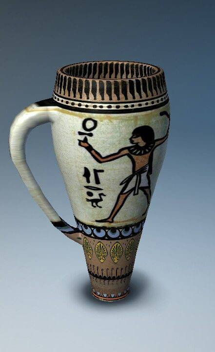
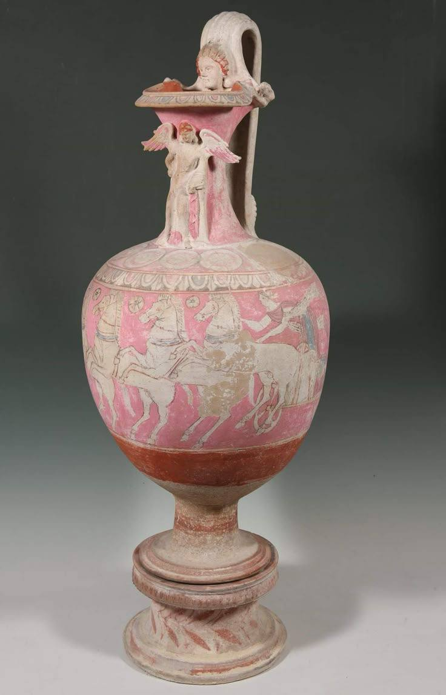

История гончарного ремесла
Гончарное дело — одно из древнейших ремесел человечества, его история насчитывает более 10,000 лет. Первые глиняные изделия появились в эпоху неолита, когда люди начали вести оседлый образ жизни и возникла необходимость в посуде для хранения продуктов.
В Древнем Египте гончарное искусство достигло невероятных высот. Египтяне изобрели первый гончарный круг около 3000 года до н.э., что позволило создавать симметричные сосуды с тонкими стенками. Их изделия украшались сложными орнаментами и часто покрывались глазурью.
В Древней Греции керамика стала настоящим искусством. Знаменитые чернофигурные и краснофигурные вазы с мифологическими сценами до сих пор восхищают своей детализацией. Каждый город-полис имел свой узнаваемый стиль.
В Средние века гончарное дело развивалось в монастырях, где создавали не только посуду, но и изразцы для украшения храмов. Эпоха Возрождения принесла новые технологии обжига и росписи.
← Вернуться ко всем статьям